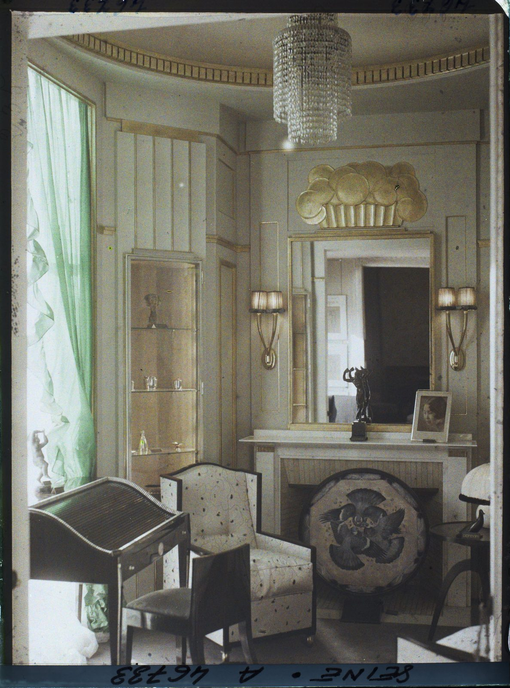

References / Architecture / 18
Boudoir of the Hôtel du Collectionneur, Paris 1925
An autochrome taken at the 1925 Paris exhibition: Ruhlmann’s boudoir in the Pavillon du Collectionneur, with gilded panels, a basket of gold disks over the mirror, and dark lacquered furniture.
- Source
- Wikimedia Commons: musée départemental Albert-Kahn, A46733S
- Creator
- Émile-Jacques Ruhlmann (ensemble); photograph by Léon Auguste for the Archives de la Planète
- Made
- 1925 (photograph dated 15 September 1925)
- Style
- Art Deco (agent-proposed, not yet reviewed by a person)
- Moods
- Luxurious, glamorous, formal
- Evidence
- Downloaded and inspected the musée Albert-Kahn autochrome from Wikimedia Commons (1520 × 2048 px). The museum’s own notice page returned HTTP 403 to a script and to Claude in Chrome, so the metadata comes from the Commons record, which copies it.
- Reviewed
- Rights
- Open license, stored. License: CC0-1.0. Rights policy

The musée Albert-Kahn notice page could not be opened on 2026-09-25 (HTTP 403). Rights and metadata are taken from the Commons copy.
Context
Commons records the autochrome as A46733S of the musée départemental Albert-Kahn, operator Léon Auguste, mission “1925 – Exposition internationale des Arts Décoratifs et Industriels modernes Paris”, dated 15 September 1925. The original caption reads “Petit Salon du Pavon Rhulmann”. Commons.
The style this room belongs to takes its name from the 1925 Exposition. See Art Deco.
Observed
- The room is pale gray-white with thin gilt fillets that divide the walls into tall vertical panels.
- A gilded relief of overlapping disks in a fluted basket sits above a tall rectangular mirror with a gilt frame.
- Two gilt wall sconces with pleated shades flank the mirror symmetrically.
- A cylindrical crystal chandelier of stacked tiers hangs from a cornice with a gilded dentil band.
- A black lacquered writing desk with a curved roll top and a black chair stand at lower left; an armchair covered in pale fabric with a dark frame stands beside them.
- A round screen in front of the fireplace shows dark birds with spread wings in a radiating arrangement.
- Green silk curtains hang at the left window. A small bronze figure and a framed portrait photograph stand on the mantelpiece.
- The colors are soft and grainy, as is usual for an autochrome.
Why it belongs
The room is the ensemblier idea in one view: furniture, wall panels, lighting, and ornament are designed together around one symmetrical axis through the mantel and mirror.
The gilded basket of disks is a stylized bouquet, the same motif as the inlay on Ruhlmann’s corner cabinet, turned into flat circles.
Borrow
Divide a pale ground into tall panels with thin gold rules.
Place one gilded ornament on the central axis and pair identical elements on each side of it.
Set black, glossy objects against a pale room for contrast instead of using a dark ground everywhere.
Measured
Machine-extracted by tools/image-traits.py on . Full measurement.
- Mean chroma
- 0.06
- Palette
- #726e5f 16%
- #929385 13%
- #47423c 13%
- #878470 9%
- #585247 9%
- #363433 7%
- #212324 7%
- #676151 4%

